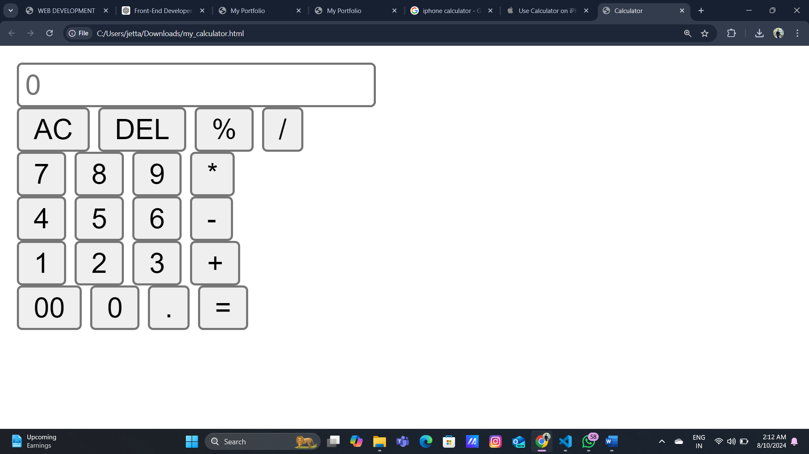

Skills
- HTML5
- CSS3
- JavaScript
- pythont
- java
Projects



Project Title 1
Description of Project This is a simple, yet fully functional calculator built using HTML, CSS, and JavaScript. The calculator can perform basic arithmetic operations such as addition, subtraction, multiplication, and division. It features a clean and intuitive user interface, designed to mimic the look and feel of a standard handheld calculator. The project is responsive, ensuring it works well on various devices, including desktops, tablets, and smartphones. This calculator project is a great demonstration of my ability to create interactive web applications using core web technologies.
Resume
Follow Us
Follow us:
© 2024 Software Development Solutions
<